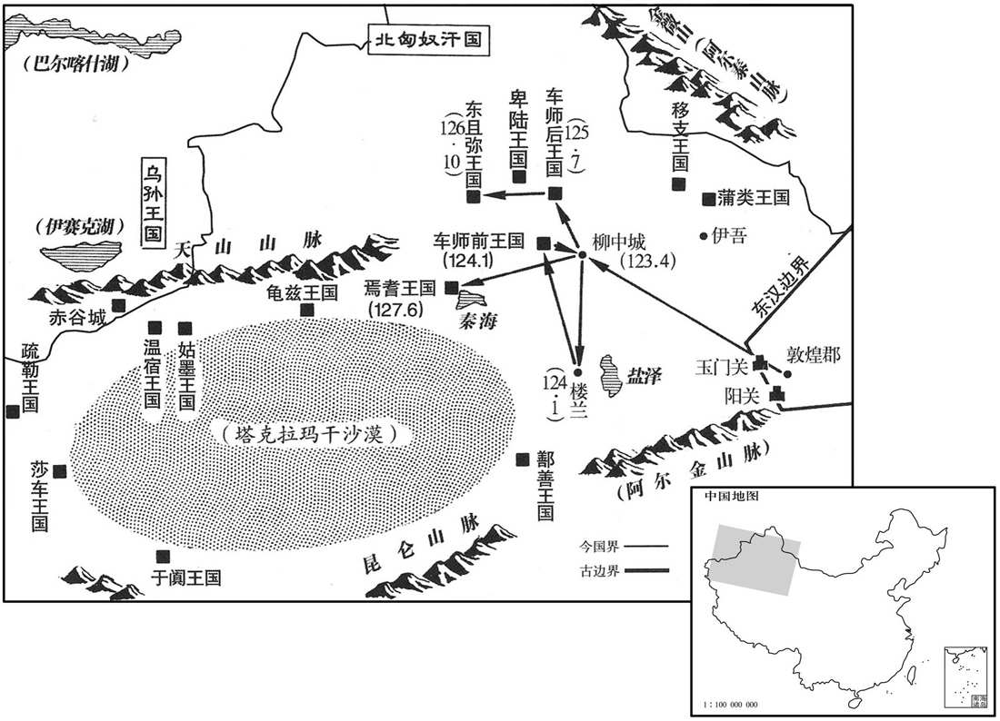

公元123年资治通鉴：本年记事、原文与白话对照
按原书编年位置阅读；追叙和史论不等于本年发生的事件。白话采用所据译本，缺译不以生成译文补齐。
卷50 · 本年记事
公元123年 · 汉孝安皇帝延光二年
二年〔（癸亥、一二三）〕
本年事件索引（现代整理）

本年形势与背景参考图
春，正月，旄牛夷反，〔前汉旄牛县，属蜀郡，后汉省。华阳国志：旄牛县在邳莱山表。〕益州刺史张乔击破之。
春季，正月，旄牛夷人反叛，被益州刺史张乔击败。
夏，四月，戊子，爵孔母王圣为野王君。
夏季，四月戊子（二十日），将奶娘王圣封为野王君。
北匈奴连与车师入寇河西，议者欲复闭玉门、阳关以绝其患。〔贤曰：玉门、阳关，二关名也，在敦煌西界，皆在敦煌龙勒界。复，扶又翻；下同。〕敦煌太守张珰上书曰：〔敦，徒门翻。〕「臣在京师，亦以为西域宜弃，今亲践其土地，乃知弃西域则河西不能自存。谨陈西域三策：北虏呼衍王常展转蒲类、秦海之间，〔贤曰：大秦国在西海西，故曰秦海。余按蒲类海在唐庭州界。盖此时北匈奴虽微弱，然东畏鲜卑，不敢还故地，但结连车师、鄯善以扰河西，故呼衍一部常为河西患。若贤注以大秦海西之国为秦海，则约言之耳。西海广远，甘英之不能越，北匈奴兵威所未尝役属；言展转二海间，特当时上书者张言之耳。〕转制西域，共为寇钞。今以酒泉属国吏士二千余人集昆仑塞，〔贤曰：前书，敦煌郡广至县有昆仑障，宜禾都尉居也。广至故城，在今瓜州常乐县东。注又见四十五卷明帝永平十七年，与此稍异。〕先击呼衍王，绝其根本，因发鄯善兵五千人胁车师后部，此上计也。若不能出兵，可置军司马，将士五百人，四郡供其犁牛、谷食，出据柳中，此中计也。〔四郡，武威、酒泉、张掖、敦煌。贤曰：柳中，今西州县。余按西域传：柳中在后部金蒲城之北，去交河城八十里。杜佑曰：唐平高昌，以田地城为柳中县。鄯，上扇翻。〕如又不能，则宜弃交河城，收鄯善等悉使入塞，此下计也。」朝廷下其议。〔鄯，上扇翻。下，遐稼翻。〕陈忠上疏曰：「西域内附日久，区区东望扣关者数矣，此其不乐匈奴、慕汉之效也。〔数，所角翻。乐，音洛。〕今北虏已破车师，势必南攻鄯善，弃而不救，则诸国从矣。〔言从北匈奴也。〕若然，则虏财贿益增，胆势益殖，〔贤曰：殖，生也。〕威临南羌，〔即湟中及南山诸羌。〕与之交通，如此，河西四郡危矣。河西既危，不可不救，则百倍之役兴，不訾之费发矣。〔毛晃曰：訾之为言量也，不訾，谓无量可比也。訾，子斯翻。〕议者但令西域绝远，恤之烦费，不见孝武苦心勤劳之意也。方今敦煌孤危，远来告急；复不辅助，内无以慰劳吏民，〔劳，力到翻。〕外无以威示百蛮，蹙国减土，非良计也。臣以为敦煌宜置校尉，按旧增四郡屯兵，以西抚诸国。」帝纳之，于是复以班勇为西域长史，〔贤曰：西域都护之长史也。余按班超未为都护，亦为将兵长史。敦，徒门翻。复，扶又翻；下同。〕将兵五百人出屯柳中。
北匈奴接连与车师侵入河西地区，议论此事的官员主张再次关闭玉门关和阳关，以杜绝外患。敦煌太守张上书说：“我在京城时，也曾认为应当放弃西域，而如今亲自踏上这块土地，才知道如果放弃西域，那么河西地区就不能独自存在。我谨献上有关西域的上中下三策：北匈奴呼衍王经常辗转来往于蒲类海和秦海之间，控制西域地区，带领西域各国一同侵略汉朝。现在可以派酒泉属国的部队二千余人集合到昆仑塞，先去攻打呼衍王，除掉祸根，随即征调鄯善国军队五千人威胁车师后国，这是上策。如果不能出兵，可以设置军司马，领兵五百人，由河西四郡武威、酒泉、张掖、敦煌供给犁、牛、粮食，出塞进据柳中，这是中策。如果还不行，那么就应放弃交河城，收揽鄯善等友好国家的人民，让他们全部进入塞内。这是下策。”朝廷让群臣讨论张的建议。陈忠上书说：“西域归心汉朝已久，有不少国家热诚地向往东方，到边关探询请求，这是他们不满匈奴、仰慕汉朝的证明。如今北匈奴已经打败了车师，势必向南进攻鄯善。如果我们放弃他们而不去援救，各国就要归附北匈奴了。若是如此，那么北匈奴的财富就会愈发增多，胆量就会愈发变大，威势逼近南羌地区，与羌人联络，这样河西四郡就危险了。河西地区既然危险，不可不去救援，那么就要征发百倍的徭役，动用无数的资财了。议论此事的人，只想到西域距离极远，照顾这一地区花费太多，却看不到孝武皇帝苦心操劳的本意。目前敦煌孤立危险，从远方向朝廷告急，再不给予帮助，对内无法安慰官吏和人民，对外无法向各异族示威，势必削减自己的领土，这不是好计策。我认为应当在敦煌设置校尉，依照旧例增加河西四郡的驻军，以镇抚四方各国。”安帝采纳了他的意见。于是重新将班勇任命为西域长史，率兵五百人出塞，驻扎柳中。
秋，七月，丹阳山崩。〔丹阳郡，属扬州。〕
秋季，七月，丹阳郡发生山崩。
九月，郡国五雨水。
九月，有五个郡和封国大雨成灾。
冬，十月，辛未，太尉刘恺罢；甲戌，以司徒杨震为太尉，光禄勋东莱刘熹为司徒。大鸿胪耿宝自候震，〔候，见也。〕荐中常侍李闰兄于震曰：「李常侍国家所重，欲令公辟其兄；宝唯传上意耳。〔贤曰：言非己本心，传在上之意。〕震曰：「如朝廷欲令三府辟召，故宜有尚书敕。」宝大恨而去。执金吾阎显亦荐所亲于震，震又不从。司空刘授闻之，即辟此二人；由是震益见怨。时诏遣使者大为王圣修第；中常侍樊丰及侍中周广、谢恽等更相扇动，倾摇朝廷。〔为，于伪翻。恽，于粉翻。更，工衡翻。〕震上疏曰：「臣伏念方今灾害滋甚，百姓空虚，二边震扰，〔三边，东、西、北也。〕帑藏匮乏，〔帑，它朗翻。藏，徂浪翻。〕殆非社稷安宁之时。诏书为阿母兴起第舍，合两为一，连里竟街，〔贤曰：合两坊而为一宅；里，即坊也。〕雕修缮饰，穷极巧伎，〔伎，渠绮翻。〕攻山采石，转相迫促，为费巨亿。周广、谢恽兄弟，与国无肺府枝叶之属，〔府，与腑同。〕依倚近幸奸佞之人，与之分威共权，属托州郡，〔属，之欲翻。〕倾动大臣，宰司辟召，承望旨意，招来海内贪污之人，受其货赂，至有臧锢弃世之徒，〔贤曰：有赃贿禁锢之人。余谓弃世者，见弃于世也。〕复得显用；白黑浑淆，清浊同源，天下讙哗，为朝结讥。〔浑，户本翻。讙，许元翻。为，于伪翻。朝，直遥翻。〕臣闻师言，上之所取，〔师，言，众言也。〕财尽则怨，力尽则叛，怨叛之人，不可复使，惟陛下度之！」〔复，扶又翻。度，徒洛翻。〕上不听。
冬季，十月辛未（初六），将太尉刘恺罢免。甲戌（初九），将司徒杨震任命为太尉，将光禄勋、东莱人刘熹任命为司徒。大鸿胪耿宝亲自去见杨震，向他推荐中常侍李闰的哥哥，说：“李常侍受到圣上的倚重，想让三公征召他的哥哥当官。我只是传达上面的意思罢了。”杨震说：“如果圣上有意让主管官员征召，本应有尚书发出的敕令。”耿宝十分恼恨地离去。执金吾阎显也向杨震推荐自己亲近的人。杨震又未听从。司空刘授听说后，便立即征召这两个人作自己的掾属。从此杨震愈发受到怨恨。当时安帝下诏派遣使者为王圣大修宅第，而中常侍樊丰及侍中周广、谢恽等人更互相怂恿，结党营私，扰乱动摇了朝廷纲纪。杨震上书说：“我认为，如今灾害越发严重，百姓贫困，西北东三方边境战乱不息，国库空虚，这恐怕不是国家安宁之时。但诏书颁下，要为奶娘兴修宅第，将两坊合为一体，占据整条街道；雕刻装饰，极为精巧；为了凿山采石，官员层层催逼，耗费资财亿万计。周广和谢恽兄弟，本非王室的近亲或旁支，而依靠皇上身边得宠的奸佞，和他们一同作威作福，窃取权力，向州郡官府请托，势倾大臣，主管官员征辟人才的时候，也要顺从他们的意思。他们招揽天下贪婪之人，收受贿赂，甚至有些因赃罪而被禁止当官的人，也新出任显要的官职。黑白混淆，清浊不分，天下人为此大哗，纷纷讥刺朝廷。我听先师说过，在上面的人向人民索取，财富尽时人民便会怨恨，精力尽时人民便会背叛，怨恨和背叛的人民不可再供驱使，请陛下思量！”安帝不肯听取他的意见。
鲜卑其至鞬自将万余骑攻南匈奴于曼柏，薁鞬日逐王战死。〔鞬，居言翻。薁，于六翻。〕
两版字句有差异，建议核对原文。
鲜卑首领其至亲率骑兵一万余人，在曼柏向南匈奴发动进攻。南匈奴日逐王战死，一千余人被杀。
十二月，戊辰，京师及郡国三地震。
十二月戊辰（初四），京城洛阳和三个郡和封国发生地震。
陈忠荐汝南周燮、南阳冯良学行深纯，〔行，下孟翻。〕隐居不仕，名重于也；帝以玄纁羔币聘之；〔玄，黑色。纁，浅绛色。周官考工记曰：三入为纁。尔雅：三染谓之纁。孔颖达曰：东帛，十端也。端则二丈。十端，六玄、四纁。五两，三玄、二纁。纁是地色，玄是天色。贤曰：礼，卿执羔。董仲舒春秋繁露曰：凡贽，卿用羔，羔有角而不用，执之不鸣，杀之不鸣，杀之不嗥，类死义者；羔饮其母必跪，类知礼者：故以为贽。纁，许云翻。〕燮宗族更劝之曰：「夫修德立行，所以为国，〔更，工衡翻。行，下孟翻。为。于伪翻。〕君独何为守东冈之陂乎﹖」〔燮居汝南安城，有先人草庐，结于冈畔，下有陂田，常肆勤以自给。〕燮曰：「夫修道者度其时而动，动而不时，焉得享乎！」〔贤曰：享，通也。书曰：虑善而动，动惟厥时。度，徒洛翻。焉，于虔翻。〕与良皆自载至近县，称病而还。
陈忠举荐汝南人周燮、南阳人冯良，称赞他们学识高深，品行纯正，隐居乡间而不入仕途，在当世享有盛名。于是安帝用黑色绸缎和羔皮做礼品，征聘他们做官。周燮家庭的人进一步劝说周燮道：“培养道德，砥砺品行，目的是为国效力，您为什么偏偏要守在东山坡呢？”周燮说：“培养品德学问的人，要等待时机而动。时机未到就动，怎么能行得通呢！”他和冯良都自己坐车到本县县府，声称有病，然后回家。